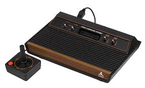

O Clássico que popularizou os Videogames
O Atari 2600, lançado em 1977, foi um dos primeiros consoles de videogame a se popularizar mundialmente. Produzido pela Atari, Inc., ele trouxe a possibilidade de trocar cartuchos, revolucionando a forma como os jogos eram distribuídos. Antes disso, a maioria dos consoles vinha com jogos embutidos e não permitia mudanças.